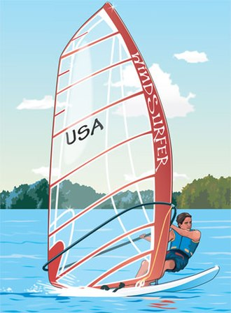

Purjeluad
See leht tutvustab, miks purjelauaga purjetamine on tore, ja miks sa peaksid seda proovima
Ingliskeelne Vikipeedia artikkel purjelauast

Miks siis on purjetamine mõnus????
Merel tuulekiirusel sõitmine tekitab kirjeldamatu vabadusetunde
Sõidad kuhu tahad ja keegi ei hakka sind selles takistama:)
Väga füüsiline sport, saab tugeva vastupidavuse
Saab tugevad "core" lihased(kõht, külg, alaselg jne..)
Avastamisruumi on tohutult, sest tegemist on väga tehnilise alaga ja mida "osavam" sa oled, seda lahedamaid asju saab teha, seega kunagi ei hakka igav
Tavaline purjetamine vs "purjelauatamine"
Purjekas
Purjelaud
Liikumisviis
Puri
Puri
Alus
Paat
Laud
Keskmine kiirus
30 km/h
45 km/h